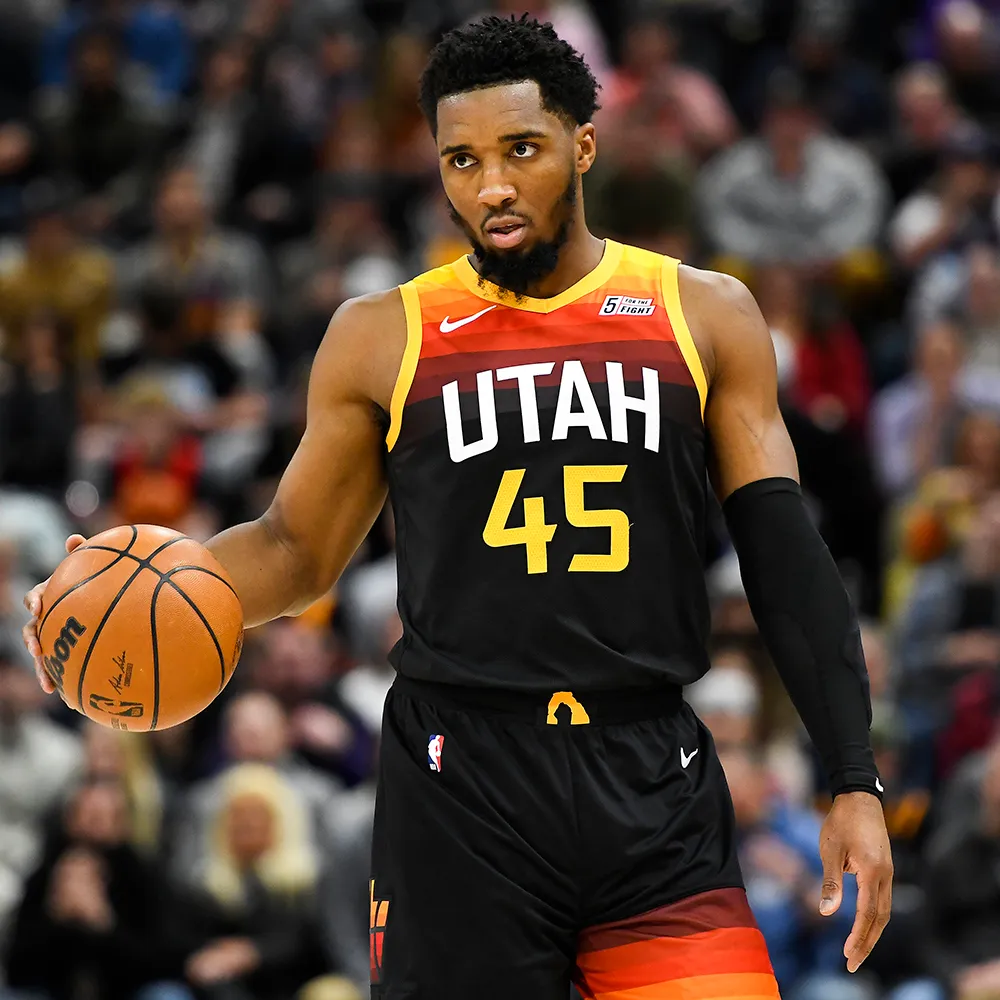
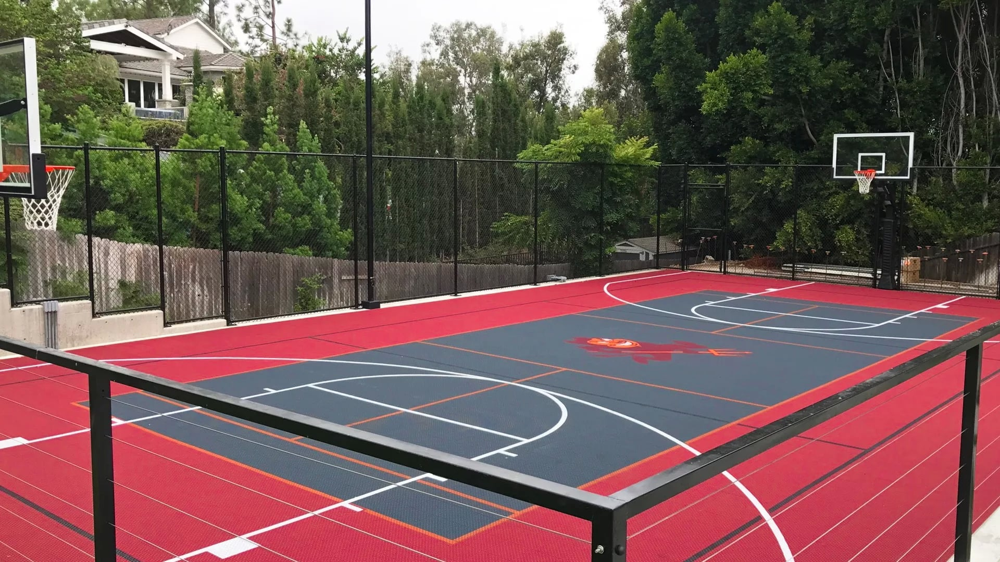

Basketball

The Evolution of Basketball
Basketball, a globally celebrated sport, was invented by Dr. James Naismith in 1891 in Springfield, Massachusetts. Designed as a winter activity for students, it quickly gained popularity due to its simplicity and adaptability. The original game involved a soccer ball and peach baskets as goals, but it has evolved significantly over time. With the introduction of proper basketballs, standardized courts, and advanced strategies, the sport transitioned into a dynamic and competitive game. Today, basketball is played by millions, from local community courts to international arenas.
Fundamental Skills and Rules
The core of basketball lies in its fundamental skills: dribbling, shooting, passing, and defense. Players must master these elements to contribute effectively to their team's success. The game consists of two teams, each striving to score by shooting the ball into the opponent’s hoop while preventing the opposition from doing the same. The standard court is divided into two halves, with a three-point arc and free-throw lines marking critical scoring zones. While the rules have been refined over the years, the focus on teamwork, strategy, and athleticism remains central.
Positions
- Point Guard
- Shooting Guard
- Donovan Mitchell 
- Michael Jordan
- Klay Thompson
- Small Forward
- Power Forward
- Center
The Role of Teamwork
Teamwork is a cornerstone of basketball, distinguishing it from many other sports. Success in basketball requires seamless coordination and communication among players. Each team member plays a specific role, whether as a scorer, defender, or playmaker, contributing to a unified strategy. Team dynamics often determine a game’s outcome, as cohesive units can outmaneuver even the most skilled individual players. This emphasis on collaboration mirrors the importance of teamwork in other aspects of life, making basketball a valuable teaching tool beyond the court.
The Rise of Professional Basketball
Professional basketball leagues, such as the National Basketball Association (NBA), have significantly elevated the sport's status. The NBA, established in 1946, has become a global phenomenon, showcasing elite talent and thrilling competition. Iconic players like Michael Jordan, LeBron James, and Kobe Bryant have not only set records but also inspired generations. These athletes demonstrate the dedication, skill, and passion required to excel at the highest level. The league’s international expansion has also fostered a global appreciation for basketball, uniting fans from diverse backgrounds.

Basketball as a Global Sport
Basketball’s popularity extends far beyond its origins in North America. The sport is played and cherished worldwide, with countries like Spain, Argentina, and China producing top-tier talent. International tournaments, such as the FIBA World Cup and the Olympic Games, highlight the global nature of the sport. These events bring nations together, celebrating cultural diversity and fostering mutual respect through competition. Moreover, grassroots initiatives and local leagues have made basketball accessible to people of all ages and skill levels.
The Impact of Basketball on Society
Beyond its entertainment value, basketball has a profound societal impact. It promotes physical fitness, teamwork, and discipline while serving as a platform for social change. Many players and organizations use the sport to address issues such as racial equality, education, and poverty. Community programs and charity events organized by basketball leagues and players provide resources and inspiration to underserved populations. As a unifying force, basketball continues to break barriers and build bridges, proving its significance both on and off the court.
In essence, basketball is more than just a game; it is a global movement that continues to evolve, inspire, and bring people together.

Jump to Top